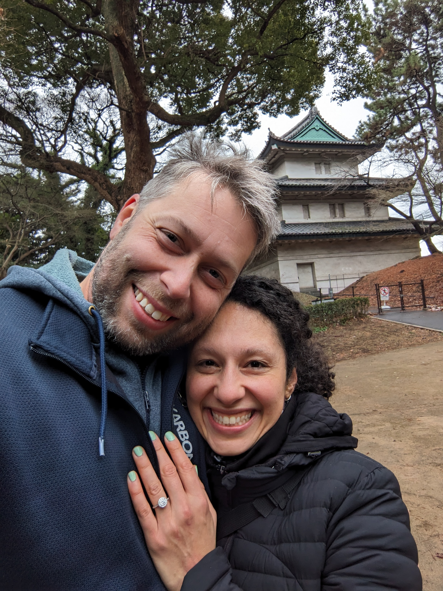

أنت مدعو لحضور حفل زفافنا الخاص والمميز! نحن متحمسون لمشاركتكم هذا اليوم الرائع.
مستنيينك عشان تشاركنا المغامرة الجميلة دي! 🎉
الأحد، ٤ مايو ٢٠٢٥
(قوة ستار وورز معاك! تعالى احتفل معانا في يوم ستار وورز لفرح مجنون وفضائي!)
عشان حبنا للسفر والمغامرة، متحمسين نبدأ حياتنا سوا. 🚀
الفَرَح هيبقى خاص جدًا للعيلة القريبة (الأهالي والأطفال بس).
دعوتك بتشمل دخول متحف الطيران والفضاء—الأطفال هيبسطوا جدًا هناك! 🚀✨
| الوقت | الحدث | المكان |
|---|---|---|
| ٢:٠٠ ظ - ٢:٣٠ ظ | وصول الضيوف | متحف الطيران والفضاء |
| ٢:٣٠ ظ | مراسم جواز سريعة 💒 | متحف الطيران والفضاء |
| ٤:٣٠ م - ٥:٠٠ م | تصوير وراحة 📸 | لسه هيتأكد |
| ٥:٠٠ م - ٦:٠٠ م | تصوير وراحة 📸 | لسه هيتأكد |
| ٦:٠٠ م - ٨:٠٠ م | عشاء 🍽️ | ستيرلينج ستيك هاوس، جاتينو
منيو ثابت فيه ٣ اختيارات (تفاصيل أكتر قريب) |
| ٨:٣٠ م | كاريوكي وفرح 🎤🎶 | VIP Karaoke |
الأطفال مرحب بيهم في الكاريوكي VIP لحد الساعة ١٠ بالليل. لو حابب تيجي، ابعت رسالة لهبة على Hebba.Antar@gmail.com.
ترشّحلي فندق؟
بنرشحلك Courtyard Ottawa East، مكانه ممتاز جنب الطريق السريع والمتحف—وفي المسافة بين ٥ لـ ١٠ دقايق من المطعم، وليلة تقريبًا بـ٢٠٠ دولار. لو عايز تجربة أفخم، ممكن تبص على فنادق وسط أوتاوا أو جاتينو، أسعارهم ساعات أقل. AirBNB كمان اختيار اقتصادي ممتاز. ولو حابب تبقى قريب من عندنا في غرب المدينة، فيه TownePlace Suites و Brookstreet Hotel اختيارات حلوة برده بس الليلة تقريباً بـ٣٣٠ دولار.
إيه منيو المطعم؟
| شوربة اليوم |
| مقبلات. اختار واحدة: |
| قوقعة سان جاك (جمبري، اسكالوب وسمك في صوص بشاميل، بطاطس، ومغطى موتزاريلا) |
| تارتار لحمة بقري مفرومة يدوي مع تتبيلة بيتية وعيش توست محمص |
| سلطة البحر المتوسط مع فلفل ألوان وزيتون وطماطم وخيار وبصل وجبنة فيتا وصوص يوناني |
| الطبق الرئيسي. اختار واحدة: |
| نيويورك ستيك ١٢ أوقية أو فيليه ميجنون ٨ أوقية مع كبدة أوز وكمأة، بطاطس دوبل كوك، وخضار موسمي |
| فيليه سلمون مشوي مع صوص زبدة بيضاء، جمبري كبير واسكالوب، ريزوتو بالفطر البري وخضار سوتيه |
| ضلوع خنزير بري مشوية على اللهب مع صوص كيميشوري بالثوم الأسود، بيوريه بطاطس بالثوم وخضار موسمي |
| مكرونة بثمار البحر مع بيستو كريمي، جمبري، اسكالوب ونص كركند |
| حلو اليوم |
| للعيّل الصغيرة |
| طبق رئيسي. اختار واحد: |
| ناغتس فراخ (قطع فراخ مقلية) |
| مكرونة |
| حلو اليوم |
إيه هي خيارات المواقف؟ 🚗
في متحف الطيران، في موقف سيارات مدفوع من إنديغو، بـ 3/الساعة (الحد الأقصى 8). في مطعم ستيرلينغ، فيه موقف مخصص ومجاني عند المطعم، حوالي 20 متر بعد المطعم في شارع جاك-كارتييه. موقع موقف السيارات. لو حد عايز يروح يعمل كاراوكه، الموقف في الشارع ومجاني يوم الأحد 🎤.
ألبس إيه؟ هل هو فخم؟ 👗
إلبس اللي إنت عايزه! العروسة والعريس هيكونوا متلبسين بشكل رسمي، ومن بعد هانصور شوية صور، مش هنكون لابسين تيشيرتات، لكن برضه مفيش بدلة رسمية أو فستان أبيض تقليدي. بالنسبة للعشاء، هيكون نفس الموضوع. ماتنساش، الأطفال هيتمنوا يجريوا في المتحف! 😄